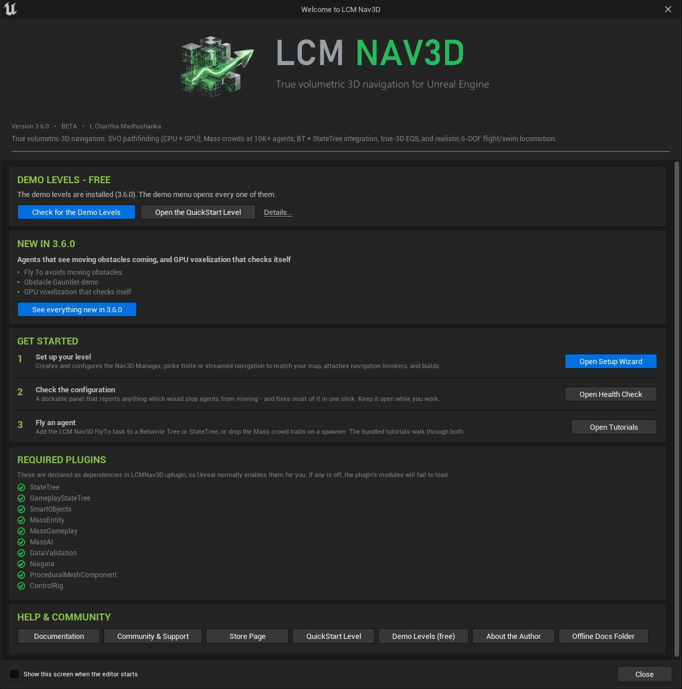
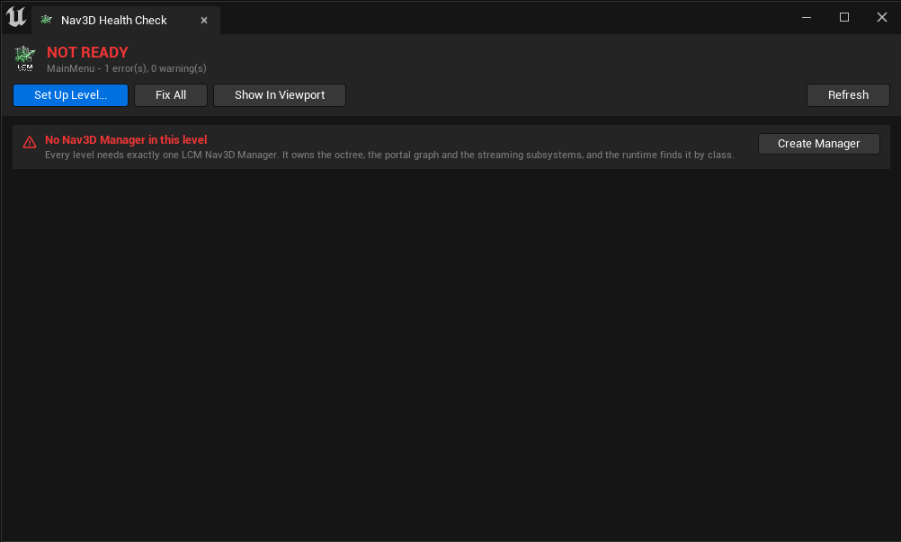
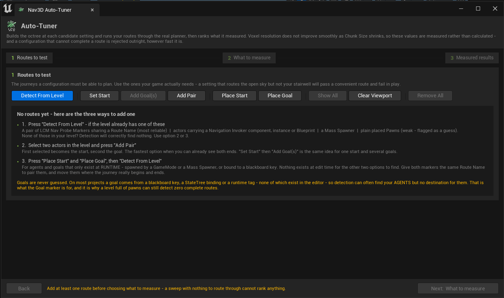

LCM Nav3D: Editor Tools
All the editor tools are in the Nav3D menu on the Level Editor toolbar. You can also open the panels from Window ▸ Level Editor.

Figure 1: The Nav3D toolbar menu. It has four groups, in the order you will usually use them. A greyed-out entry is not available for this level. Build Octree only works in a finite world, and Bake Skeleton only appears when the level is set up to use a baked skeleton.
Quick start
- Nav3D ▸ Set Up Level... creates and sets up the manager, picks finite or streamed navigation to suit your map, adds navigation invokers and builds the octree.
- Nav3D ▸ Health Check opens a panel that lists problems. Dock it and keep it open while you work.
- Add the LCM Nav3D FlyTo task to a Behavior Tree or StateTree, or add the Mass crowd traits to a spawner.
You can also find the Nav3D actors in the Place Actors panel, under LCM Nav3D.
Keyboard shortcuts
| Shortcut | Action |
|---|---|
Ctrl+Alt+N |
Health Check |
Ctrl+Alt+B |
Build Octree |
Ctrl+Alt+V |
Show Voxels |
You can change or remove them in Editor Preferences ▸ Keyboard Shortcuts.
The Welcome screen
The Welcome screen opens once after each plugin update. You can open it at any time from Nav3D ▸ Welcome / Getting Started.

Figure 2: Welcome screen. From the top: the version,
DEMO LEVELS (download the free demo levels or open the
QuickStart level), NEW IN 3.6.0, three
GET STARTED steps that open the Setup Wizard, the Health
Check and the tutorials, REQUIRED PLUGINS and help
links. REQUIRED PLUGINS checks the dependencies in
LCMNav3D.uplugin against what your project has enabled, and
shows an Enable button next to any that are off. If one
is missing, the plugin's modules fail to load, and this list tells you
which one.
The links under HELP & COMMUNITY come from the
.upluginfile, so they match the store listing. A greyed link means that entry is empty in the file.
The Manager panel
Select the LCM Nav3D Manager in your level to see its Details panel. Above the numbered settings sections there is a header card. It shows the current state as coloured labels (world model, loaded chunks, voxelizer), the build buttons for this kind of world, and two summaries: Configuration Health and What You Get.

Figure 3: Manager Details, top half. From the top:
- The labels show the world model, how many chunks are loaded, and which voxelizer is in use.
- Configuration Health only opens when something is wrong. In this screenshot it reports that the Streaming Profile raised the invoker radius from 1,000 cm to 8,000 cm. With a radius smaller than one Chunk Size, an agent has no neighbouring chunk and can't find any route.
- What You Get shows the numbers your settings
produce. For example, Finest leaf edge 250 cm with
Min Voxel Sizeat 100 is correct. The octree keeps halving a chunk until the next half would be smaller than your voxel size, so the leaf isChunkSize / 2^k. That lands between 2× and 4× the value you typed.
The build actions
The panel only shows the buttons that apply to your kind of world. A finite world has no chunks to build a skeleton from, and a streamed world has no single octree to save.
| Button | World | What it does |
|---|---|---|
| Build SVO (Editor Preview) | Finite | Builds the octree now, in memory, so EQS queries and the debug view work without pressing Play. It is thrown away when you close the editor. Use Bake to Asset to keep it |
| Bake to Asset | Finite | Saves the octree to a ULcmSVODataAsset and adds a
streaming proxy that loads it. The game then no longer builds the octree
every time it starts |
| Bake Skeleton | Infinite, and only when Use Baked Skeleton is on |
Saves a coarse map of how the whole level connects, so long routes can be planned from the first frame |
Bake to Asset uses the manager's own
World Extent, Min Voxel Size,
Clearance Padding and collision filters, so the bake matches
what the game expects. It also stores the settings and geometry it was
baked from. That is how the health section can tell you later that the
bake is out of date.
When the bake succeeds it turns Auto Build On Play
off. If both were on, the proxy and the manager would both write the
navigation data during BeginPlay, in no fixed order. You
couldn't tell which one the level used, and if the rebuild ran last the
level would take as long to load as it did without a bake.
Bake again after you move level geometry or change the voxel settings.
Save the level after baking. The asset is saved to disk straight away, but the streaming proxy that loads it is an actor in the level. If you close without saving, nothing loads the bake, and
Auto Build On Playwas turned off on an actor you threw away. The level then has no navigation at all.
The
LCM Nav3D Bake Volumeactor is the other way to bake. It is meant for a different job; see Bake Volumes below. For a single finite world, the button on the manager is simpler, and it always uses the manager's settings. Both write the same kind of asset.
Configuration Health
This section checks combinations of settings that can't be checked one property at a time. It updates as you edit, and it appears next to the settings it is about. There are three kinds of row: ⚠ for a real problem, i for something useful to know, and ✓ when everything is fine.
| ⚠ Warning | Why it matters |
|---|---|
| Voxel budget | Going over the budget doesn't cause an error. The build quietly
makes Min Voxel Size coarser until it fits, so you get less
detail than you asked for |
| Clearance Padding vs Min Voxel Size | Padding grows every solid surface, so padding of 2× the voxel size or more closes narrow openings. Set it to your agent's radius |
| Invoker radius vs Chunk Size | With a radius smaller than one Chunk Size, an agent has
no neighbouring chunks. No route can be planned, so no more chunks are
loaded either |
| Residency demand | The area around an invoker is a cube, so the number of chunks grows
as (2R / ChunkSize)³. Halving Chunk Size means
8× as many chunks |
| Baked asset out of date | The game can't tell that a bake no longer matches the level. It still loads, and agents avoid open space or fly through geometry, with nothing in the log |
| Auto Build On Play overrides the bake | Both write the navigation data during BeginPlay in no
fixed order, so you can't tell which one the level uses |
| i Information | What it tells you |
|---|---|
| Finest leaf vs the floor | The finest leaf is ChunkSize / 2ᵏ, somewhere between
2× and 4× Min Voxel Size, and it does not get steadily
finer as Chunk Size gets smaller. This is expected; see below |
Why the leaf size is shown as information. It only depends on
Chunk Size, and it is the same at everyMin Voxel Size. A leaf near 4× your voxel size just means Chunk Size is not a power-of-two multiple of it, which is true for most of the Auto-Tuner's own candidates too. Whether that coarser leaf causes a problem, such as a closed opening or a route that can't be planned, can't be worked out from the settings. The Auto-Tuner measures it, so the panel just shows the number.
What the out-of-date check can and can't see. It compares the voxel settings the bake used, and a fingerprint of every actor with collision inside the baked area: which actor it is, its transform, scale and bounds. So it notices geometry that was moved, added, removed or rescaled, which covers almost every change to a level. It does not look at the triangles, so a mesh you edited in place (same actor, same transform, new shape) isn't noticed. Bake again after editing a mesh. Assets baked before this check existed are reported as "can't be checked".
When there is a ⚠ row, the section shows one button: Tune Settings..., which opens the Auto-Tuner. There are no buttons that apply a value for a single warning. The right value depends on your level, and small changes in these settings can have large effects, so it has to be measured.
The same checks are also written to the Output Log, and both use the same rules.
What You Get
This section shows the values your settings actually produce:
| Row | Note |
|---|---|
Navigable volume |
Finite only. The actual bounds in the world. See the note below |
Finest leaf edge |
The actual smallest voxel, and how it compares with the best you
could get (2 × Min Voxel Size) |
Voxels / chunk (or / world) |
Compared with the voxel budget |
Chunk builds / frame |
Set by the Streaming Profile |
Invoker radius floor |
The smallest invoker radius the profile allows, if it sets one |
The finite volume is centred on the world origin, not on the manager actor.
World Extentis half the size, so the volume goes from-WorldExtentto+WorldExtenton each axis around(0,0,0). The manager has no root component, so moving it doesn't move the navigation volume. Build your level around the origin, or use an infinite world.
Why the panel is short
The manager has no geometry, collision or transform, so the usual Actor sections that don't apply to it (Rendering, Collision, Physics, LOD, Cooking, Input, HLOD, Mobile, Ray Tracing, Texture Streaming, Virtual Texture) are hidden in this panel. They still exist on the class.
Replication, Actor (tags) and
World Partition are still shown. The manager uses
multicast RPCs, your gameplay code may find it by tag, and Is
Spatially Loaded must stay off so the manager doesn't stream
out.
Bake Volumes
Place an LCM Nav3D Bake Volume from the Place Actors panel and resize the brush to cover the area you want to bake. Its panel is laid out like the manager's, with the same labels, one bake button, Configuration Health and What You Get.
I want two separate areas navigable. Which setup?
Use grid mode and an Infinite World. That is the only setup that works. This is the most common mistake with bake volumes, so here is why.
A finite world has exactly one navigation volume. A single-volume Bake Volume writes to it, and so does the manager's Bake to Asset. They both write to the same place, so the one that ran last wins and the other area has no navigation. Overlapping the two doesn't join them, because a finite world can only hold one. If you bake area A, then bake area B, only B will be navigable. That is how a finite world works.
| What you want | Setup |
|---|---|
| One area | One single-volume Bake Volume or the manager's Bake to Asset. Not both |
| One bigger area | Make the volume bigger, or raise the manager's
World Extent |
| Two or more separate areas | Snap To Global Grid on for each volume,
and Infinite World on for the manager |
The manager's Bake to Asset won't run while a single-volume Bake Volume is in the level, so it can't overwrite the volume's bake by accident. Both Details panels point out the conflict.
One volume or many?
This is the Snap To Global Grid setting. The two choices
store their results in different places at
runtime:
Snap To Global Grid |
Produces | Manager must be | How many volumes |
|---|---|---|---|
| Off | One chunk, the size of this volume | Finite world | Exactly one |
| On | One chunk per grid cell | Infinite world | As many as you like |
With Off, the bake goes into the manager's single
navigation volume, so a second single-volume bake has nowhere to go.
Both use the same asset name in the same place, and only the last one
survives. To cover more ground with one volume, make it bigger or raise
the manager's World Extent.
With On, the bake goes into a store that can hold any
number of chunks, one per grid position. Use this for several areas. It
needs Infinite World on the manager. With a
finite manager, every chunk goes into the single volume instead,
and each one overwrites the one before. The header label turns amber
when the two settings don't match, and Configuration Health tells you
how to fix it.
"Infinite World" is about how navigation is stored and streamed. It doesn't mean the data has to be built while the game runs. A fully baked world on the grid is still an infinite world; its chunks are just loaded from disk instead of being built.
Do several connected volumes route across their seams?
Yes. Chunks are stored by grid position, so it
doesn't matter which volume made a chunk. Neighbouring chunks connect in
the same way whether they came from one volume or four. Every volume must
use the same Chunk Size,
Min Voxel Size and Clearance Padding (the panel
checks all three), and the volumes must line up on the grid, which
Snap To Global Grid takes care of.
The connections across chunk borders are worked out when you bake and saved with each chunk, so long routes across a border are correct from the first frame.
Assets baked before 2026-08-03 don't have this, and the panel tells you. Without the saved border data, each border was loaded as one big opening across the whole face, without checking the voxels. It was only corrected once an agent actually entered the chunk. So a wall along a border looked open to long-range planning, and routes were planned through it. This was easy to miss in a quick test. Bake again to fix it. Configuration Health shows how many chunks still have the old format.
Very large grids are the exception. Working out the borders needs the
whole grid in memory at once, so above
r.LcmNav.Bake.MaxMacroChunks (1024 by default) the bake
writes chunks one at a time without the border data. This is logged, and
the dialog at the end tells you. Raise the limit if you have enough
memory, or bake smaller volumes.
What the volume panel checks
Every check here is about two actors that don't agree. The bake volume has its own copy of the voxel settings, and nothing makes them match at runtime. A mismatch doesn't cause an error. The bake runs and loads, and navigation is then worked out for a world that doesn't match your level.
| ⚠ Warning | Why it matters |
|---|---|
| Bake mode vs manager world model | Decides whether the chunks go into the single volume or the grid store; see the table above |
Chunk Size ≠ the manager's |
Baked chunks are placed at
grid position × the runtime Chunk Size, so with different
sizes every chunk ends up in the wrong place, and the streamer
rebuilds the map when it loads |
Min Voxel Size / Clearance Padding ≠ the
manager's |
The bake describes a differently shaped world. The out-of-date check compares with the manager's values, so the bake shows as out of date as soon as it is written |
| Two single-volume bake volumes | Same asset name, same place: one overwrites the other without warning |
| Voxel budget per chunk | Going over it makes Min Voxel Size coarser without
telling you, and that closes narrow openings |
| More than 512 chunks | The bake runs on the game thread, can't be cancelled, and writes one asset per chunk |
| Baked chunks without border data | Assets from before 2026-08-03, or over the size limit. See the section above. Bake again |
| The manager also bakes this volume | Two bakes for one finite volume. See the start of this section |
| Long, flat brush in single-volume mode | The root of an octree is a cube, so the bake grows to the longest side on all three axes and uses voxels for the extra space |
Sizing the brush, and why the numbers don't match it
Three things often surprise people, so What You Get shows all three:
Brush Settingssize ×Transformscale. Both change the size of the volume, and the panel shows the result of both. It is one box with two ways to size it.- Single-volume mode bakes a cube. The root of an octree has to be a cube, so the bake uses the largest half-size on every axis. A 100 × 100 × 10 m brush bakes a 100 m cube, and the whole cube counts against the voxel budget. That is why the budget can be much bigger than the box you drew. Keep the brush roughly cube-shaped, or use grid mode.
- Grid mode grows to whole chunks. The brush is cut up on the global chunk grid, so the baked area grows to whole chunk borders. If the brush crosses a border by even a centimetre, it bakes a whole extra row of chunks. The Actually voxelized row shows the real area and the number of chunks.
Chunk Size is only shown when
Snap To Global Grid is on, because nothing else uses it.
Detail comes from Min Voxel Size in both modes. When Chunk
Size is shown, it is rounded to a whole multiple of
Min Voxel Size as you type, because chunk edges have to
line up with voxel edges. The panel shows the value that will be used,
and warns you if it differs from the manager's.
| i Information | What it tells you |
|---|---|
| No obstacle channels set | An empty list means WorldStatic only.
Anything solid on another channel is baked as open air |
This panel has no fix buttons. Each warning is two settings that don't agree, and only you know which one is wrong.
After baking, the debug view shows the result
The debug view draws the manager's navigation in memory. A bake writes
assets and adds proxies, and those don't load anything until
BeginPlay. So after baking from a volume, the debug view
used to stay empty, which looked like the bake had failed. Now the bake
also loads its result into the manager in the editor, so you see it
straight away. Tick Draw Debug Volumes on the manager to
see it.
Setup Wizard
The wizard is a single page, and every setting on it updates the same summary as you change it.

Figure 4: Setup Wizard, on a small level with no manager yet. Section 1 has already looked at the level: no World Partition, 3 × 3 × 3 m of geometry, and no Nav3D Manager, so one will be created. Section 2 uses a finite world and says what that means, and section 3 asks for World Extent instead of Chunk Size. On a World Partition map it picks Infinite instead, and says why. Section 4 is a checklist, so nothing happens that isn't written there. Section 5 checks the settings you are proposing, not the ones currently saved. Here it reports the missing manager, which Set Up This Level creates.
| Section | What it does |
|---|---|
| What's in this level | World Partition, geometry size, number of managers, pawns, and the GameMode's default pawn |
| Navigation mode | Finite or Infinite, and the Streaming Profile |
| Resolution | Chunk Size or World Extent, Min Voxel Size, Clearance Padding |
| What will be done | A checklist of every change the wizard will make |
| Configuration check | Problems with the settings, updated as you change them |
Under What will be done, Build the octree
now has a second option: ...and save it to an
asset. It builds the octree in the same way and then saves it,
like the Bake to Asset button. It is off
by default, unlike the other options, because the others only change
settings and can be undone, while this one saves files to
/Game/LcmNavigation/BakedData and adds an actor to your
level. Save the level afterwards.
The resolution readout
Finest voxel you actually get: 250 cm (best possible here: 200 cm - 1.25x)
This is the line to watch in the wizard. The finest
leaf is ChunkSize / 2^k, so it lands between 2× and
4× your Min Voxel Size, and it goes up and down as Chunk Size
changes. At Min Voxel Size 100 we measured:
| Chunk Size | Finest leaf |
|---|---|
| 3000 | 375 cm |
| 5000 | 312 cm |
| 7000 | 219 cm |
| 8000 | 250 cm |
So a smaller chunk can give you a coarser voxel. Openings narrower than the leaf get closed off. That is why a level can work at one Chunk Size and not at another, even though nothing is wrong with the level.
Everything the wizard does is a single undo step. It doesn't save anything for you.
Health Check
The Health Check is a panel you can dock. It lists anything that would stop agents moving, with a Fix button on each row where the plugin can fix it.

Figure 5: Health Check, on a level with a problem. The verdict is one word (READY, WORKS, WITH WARNINGS or NOT READY), large and coloured so you can read it from across the room. Under it are the level's name and the number of errors and warnings. Each finding is a row, with a button when the plugin can fix it for you. Here the level has no Nav3D Manager, and Create Manager adds one. Dock this panel and leave it open: it checks the level again whenever the map, its actors or any Nav3D setting changes.
- Fix All applies every automatic fix except the ones that change a Blueprint asset. Those have their own button, so the plugin only changes your Blueprints when you click it yourself.
- Show In Viewport draws the findings that have a position, for 30 seconds: the finite navigation volume in blue, your level's geometry bounds in red when they go past it, and a marker over each pawn that has no Navigation Invoker. It only draws; it doesn't change anything.
- The panel refreshes by itself when you open a map, add or delete actors, or change a Nav3D setting.
Look at the volume box at least once.
World Extentis a half size, and the box is centred on the world origin, not on the Manager actor. The Manager has no root component, so moving it 500 m away changes nothing. The tooltip says so, but it is easy to miss until you see the box somewhere other than around your level.
Typical findings: no manager, more than one manager, a World Partition map set to Finite, no navigation invoker anywhere, over the voxel budget, and Clearance Padding wide enough to close openings.
Invoker radius smaller than one Chunk Size is the most common one. The agent has no neighbouring chunks, so no route can be planned and no more chunks are loaded. To you, it looks like the AI refuses to move. The Automatic, Quality and Performance streaming profiles raise the radius for you; Manual doesn't.
Auto-Tuner
The Auto-Tuner builds the octree with each candidate setting, plans your routes with the real planner, and ranks the results.
It has three steps, shown along the top:
1 Routes to test → 2 What to measure → 3 Measured results
- You can go back at any time. You will often measure, look at the result, fix a route and measure again, so going back keeps everything you have set up.
- You can only go forward when a step is ready. When Next is disabled, the reason is shown at the bottom: no routes yet, no Nav3D Manager in the level, or the game is playing.
- A step gets a tick along the top when it is done. Step 3 only gets one when a configuration was recommended. If no configuration completed every route, the run finished but you still don't have an answer.
- On step 2 the button at the bottom is Run Measurement, and it moves on to the results when it finishes. On step 3 it changes to Measure Again.

Figure 6: Step 1, before you have added anything. This is what you see first. It lists three ways to add a route, and each one says what must already be in your level for it to work. At the bottom, the Next button is disabled, and the reason is shown next to it in amber.
Choosing routes
A route is a journey your agents make in the game. A configuration only counts if it can plan every route, so use the journeys your game depends on. A setting that handles open sky but not your stairwell will look fine in the test and then fail in the game.
Start with Detect From Level. The buttons above the list are grouped by what they do, from left to right:
| Group | Buttons | When |
|---|---|---|
| Find them for me | Detect From Level | Try this first. It adds routes, keeps the ones you made by hand, and skips duplicates. |
| Build from selection | Set Start, Add Goal(s), Add Pair | You can see the start and end points in the level. |
| Place by hand | Place Start, Place Goal | Agents or goals only exist while the game runs. |
| View | Show All, Clear Viewport | Check the start and end points before a long measurement. |
| Discard | Remove All | Removes every route. |
What "Detect From Level" needs
Detection looks for particular things in the level. If none of them are there, it finds nothing. These are the things it looks for, most reliable first:
| It looks for | You get |
|---|---|
| A pair of LCM Nav Probe Markers with the same Route Name | The most reliable result, because you said exactly which route you want |
| Actors with a Navigation Invoker component (placed or in a Blueprint) | Start points, from the actors that drive Nav3D streaming |
| An AMassSpawner | A start point at the spawner |
| Pawns placed in the level | Start points, marked as a weak guess |
Goals are never guessed, and that is the usual reason detection seems to do nothing. In most projects a goal comes from a blackboard key, a StateTree binding or a runtime tag, and none of those exist in the editor. So a level full of pawns can give you plenty of agents and still no complete routes. Use the Goal marker for this.
When detection adds nothing, the panel tells you which of these cases you are in and what to do.
Detection adds routes. It keeps the routes you made by hand, and it skips routes with the same start and end.
Building routes by hand
- Add Pair: select exactly two actors. The first is the start and the second is the goal. This is the quickest way when you can see both ends.
- Set Start / Add Goal(s): pick one start, then add
several goals for it. While a start is picked, the panel shows its name
with an Unpin button.
Add Goal(s)is disabled until you pick a start. - Probe markers: place a Start and a Goal marker, give both the same Route Name, and press Detect. Use this when your agents and goals only exist while the game runs. A Goal marker without a matching Start is paired with every detected agent.
Each route has its own agent width (diameter, in
cm), which you can edit on its row. A gap a drone fits through may be too
small for a gunship, so one measurement can cover a mixed group of
agents. 0 means no size limit.
Press Show on a route to highlight it in the viewport. The other routes are drawn faintly.

Figure 7: Step 1, with a route added.
Add Pair named the route after the two actors, in order, so
you can see at once if the start and goal are the wrong way round. As
soon as the route was added, step 1 got a tick and
Next became available.
Step 2: What to measure

Figure 8: Step 2. Each preset shows the exact Chunk Size, Min Voxel and Padding values it will try. The amber line is an estimate of the cost: how many configurations, the largest number of chunks, and which Chunk Size needs that many. Smaller chunks need more of them to cover the same route.
Leave Also verify Mass FlowField can traverse the route off unless your game uses a FlowField crowd. Behaviour Tree, StateTree and Mass PathFollowing all use the same planner the tuner tests, so they are covered anyway. FlowField uses a different solver, and checking it adds an extra field solve per chunk per route.
How it ranks
- Every route must complete. A configuration that can't plan a route is rejected, however fast it is. "Complete" means the path reaches the goal, not only that the query reported success.
- From the configurations that pass, you get three picks: Best Quality (the finest measured voxel), Fastest (the cheapest to build and keep in memory) and Recommended (the finest voxel that uses no more than twice the memory of the cheapest).
The full table is shown too, so you can choose differently. Click a column header to sort by it. The three picks keep their labels wherever they end up, and clearing the sort puts the table back in ranked order. Copy Table copies every row as tab-separated text. If you ask for help, paste that instead of a screenshot.

Figure 9: Step 3, measured results. How to read a row:
| Column | Read it as |
|---|---|
| Routes | Whether every route completed. Green 1/1 passed; red
0/1 is rejected, whatever the rest of the row says. |
| Leaf | The measured finest voxel, which decides what fits through a gap. Sort by it to rank quality. |
| Ratio | Path length divided by straight-line distance. 1.00 is a
straight line, the lowest possible. |
| Build / Memory | How long the configuration takes to build and how much memory it uses. Sort by Memory to rank cost. |
| ⚠ icon | This row couldn't plan a route, or its build reached the chunk limit. Hover over the row to see why. |
Show works on failed rows too, but Apply doesn't. You shouldn't apply a configuration that failed, but it helps to look at one. It draws red rings where each route gave up, and that spot usually shows you the problem.
Seeing the routes
Check your routes before you trust the results. One start or goal inside a building or under the terrain makes every configuration fail, and that looks just like a real result that says "nothing can route this level".
- Show In Viewport (on the routes card) draws every route for 30 seconds: a sphere for the start, a box for the goal, and a thin grey line between them. The line is just the straight line between the two points. It doesn't mean a route exists.
- Show (on a measured row) draws the waypoints that configuration produced. Completed routes are green.
- A route that stopped short gets red rings at its last waypoint, and a thin line to the goal it didn't reach.
The red rings usually show the problem. If a route gives up at a doorway, vent or stairwell, your level usually isn't the cause. More often it is Clearance Padding, which grows every solid surface and closes openings narrower than the leaf voxel. Lower the padding and measure again before you decide the level can't be navigated.
What it does and does not cover
| Behavior Tree, StateTree, Mass PathFollowing | Covered, because they all use the same planner |
| Mass FlowField | Only covered with "Also verify Mass FlowField..." ticked, because it uses a different solver |
| Streaming (invoker radius, builds per frame) | Not tuned. The Streaming Profile handles these |
| Dynamic obstacles | Voxelized where they are now. Their movement is not simulated |
Before tuning, move moving obstacles to the positions where they get in the way most. Set each route's agent diameter to the size of the agent that will fly it.
A measurement builds the level once for every configuration, so expect it to take minutes. You can cancel it from the progress dialog, and your settings are put back either way. Nothing changes until you press Apply on a row.
Project Settings
Project Settings ▸ Plugins ▸ LCM Nav3D. These settings apply to the whole project. Anything that can be different from one level to another is on the Manager actor instead, and is saved with the level.
Content Locations
| Setting | Default |
|---|---|
| Baked Navigation Path | /Game/LcmNavigation/BakedData |
| Baked Skeleton Path | /Game/LcmNavSkeletons |
Changing a path doesn't move bakes you already have, and it doesn't break them either. The plugin looks in the new path first and then in the default one, so a level you have already baked keeps loading. Bake it again to move it to the new path.
New Level Defaults
These are the values the Setup Wizard suggests for a level that has no manager yet: Chunk Size, World Extent, Min Voxel Size, Clearance Padding, Streaming Profile and the obstacle collision channels. Set them once, and every new level in your project starts with the same setup.
They are only suggestions. The wizard still sizes the world to the level's geometry, keeps an existing manager's values, and doesn't change a level that is already set up.
If your project puts level geometry on a custom collision channel, add that channel here. Otherwise you will have to add it by hand on every new level. With no channels, the level is voxelized as open air, and nothing warns you, because open air passes every clearance and quality check.
Console Variable Overrides
A list of r.LcmNav.* console variables and values,
applied at startup. The settings pages only cover the main options, and
there are about 345 console variables in all. Use this list for the ones
you need. Values set here are saved in DefaultGame.ini, so
they are in version control, stay set after a restart, and apply for the
whole team.
- They are applied at project-setting priority. They replace a variable's built-in default, but the command line and anything typed into the console still win, so a local debug change isn't overwritten.
- If a name isn't a real console variable, the log warns you.
Most of these variables are for diagnostics or advanced use, and the default is the right value for a shipping game. Check first whether what you want is already a property on the Manager or on the FlyTo task. It usually is, and a property is saved with the asset that needs it instead of changing the whole project.
Keyboard shortcuts
| Shortcut | Action |
|---|---|
Ctrl+Alt+N |
Health Check |
Ctrl+Alt+B |
Build Octree |
Ctrl+Alt+V |
Show Voxels |
You can change or remove them in Editor Preferences ▸ Keyboard Shortcuts.
Where things are configured
| Setting | Where |
|---|---|
| World type, voxel sizes, collision channels | Nav3D Manager, Details panel |
| How much is streamed | Manager ▸ Streaming Profile |
| Agent size, smoothing, solver | The FlyTo task or Mass trait |
| Save paths, new-level defaults, pinned console variables | Project Settings ▸ Plugins ▸ LCM Nav3D |
| Everything else | r.LcmNav.* console variables |